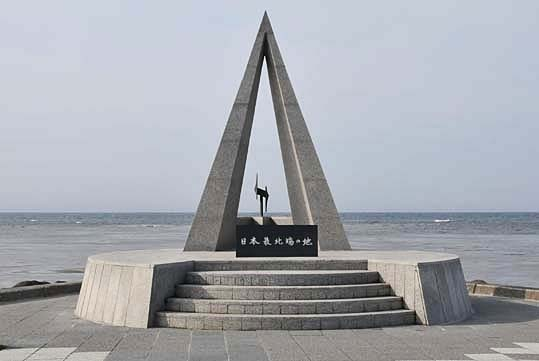
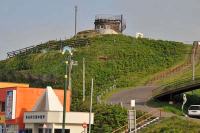
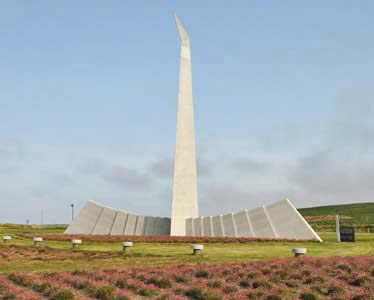
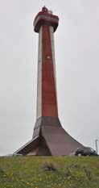
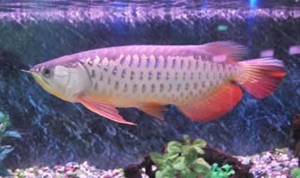
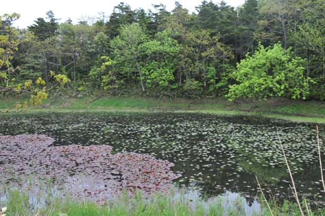

| ５日目（5月30日）後半 | 稚内→宗谷岬→宗谷丘陵→大沼周辺→稚内（泊） |
| 宗 谷 岬 |
| ５日目の前半に、礼文島桃岩コース・ハイキングをしてフェリーで稚内に到着。 （これについては、１７ 北海道の南と北（１）に掲載した） ５日目の後半は、稚内から宗谷岬と宗谷丘陵の見学である。 |
| 宗谷岬へ |
| A | ||
| 宗谷湾の声門岬の沖１．５ｋｍに珍しい海上灯台がある。付近が浅瀬だからである。 右は、帰宅してから２．５万分の１の地図に落したＧＰＳ軌跡（赤線）と海上灯台 |
||
| A | ||
| 稚内から宗谷岬に行く途中に、「間宮林蔵渡樺の地」の碑がある。 間宮林蔵は文化６年（1809）に、樺太が大陸から離れた島であることを発見した。大陸との海峡は、現在「間宮海峡」と呼ばれている。 |
||
| 宗谷岬 |
| A |  | |
| 宗谷岬に建つ間宮林蔵の像 | 宗谷岬の北端の「日本最北の地」の碑」 |
|  | A | |
| 宗谷岬に作られた旧海軍望楼（明治35年建造） 明治37年（1904）から明治38年（1905）の日露戦争の時、ロシアのバルチック艦隊を監視したという。 |
||
| A | A |  |
||
| 太平洋戦争中の昭和18年10月11日（1943）、宗谷海峡で5時間に及ぶ日米海軍の戦いがあり多くの犠牲者が出た。 この「平和の碑」は、日米の遺族が建てたものである。 |
||||
|  | A | |
|
大韓航空機撃墜事件慰霊碑 |
||
| 宗谷丘陵 |
| 宗谷丘陵は、今から約２万年前の氷河時代の末期に、氷河の周辺に形成された 「周氷河地形」である。現在ここには大型黒牛牧場や風力発電所がある。 |
| A | ||
| 日本最北端の宗谷丘陵で、1500ヘクタールの広大な草地を最大限活用し、安全･安心を追及した飼養管理方法により、 美味しい牛乳や肉質の良い肥育牛が生産されている。（株）宗谷岬牧場には、乳牛、肉用牛併せて、3,000頭収容の牛舎がある。 |
||
| 宗谷丘陵のこの地形は、周氷河地形と呼ばれる。 |
| 宗谷丘陵の中に周氷河地形の説明パネルがあった |
| 周氷河地形 ２万年前の氷河期に氷河があった場所の周辺に見られる地形を周氷河地形という。宗谷地方には氷河はなかったが、周氷河作用が働く周氷河帯であった。周氷河帯では、地中の水分が、夜間は凍結し、日中は融解する。水は氷になると体積が増えるので、岩石中に含まれる水分は凍ると岩を砕く。土中の水分が凍ると､砂礫が持ち上げられ、氷が溶けるときに移動したりする。これをソリフラクションという。 宗谷丘陵に見られるなだらかな地形は、約２万年前の最終氷期の間に形成された氷河由来の特徴的なもので、氷河周辺部での凍結融解の繰り返しによって出来たもの。なだらかな丘に谷が樹枝状に伸びる地形は、下の2．5万分の1の地形図からも観察することができる。氷河期に形成されたなだらかな丘と、後に雨が浸食した深い谷からなる特異な地形が評価され、北海道遺産に認定された。江戸時代中期からの伐採と１９１１年の山火事で森林が失われ、ほぼ全域がササ原となって地形がよく見えるようになった。 一方、2万年前およびそれ以前の氷河期に氷河によって直接削られてできた地形は氷河地形といわれる。氷河地形は、北アルプスや北海道日高山脈にカール地形として残っている。 |
| 2．5万分の1の地形図から、なだらかな丘に谷が樹枝状に伸びる地形を観察できる |
| 季節風の強い丘陵には数多くの風力発電所が設置されている。 東海岸の宗谷支庁に82基、83,065kW、西海岸の留萌支庁に96基、89,270kW（平成１８年調） |
| 自衛隊の施設のある丸山は、立ち入り禁止。 エゾシカが現れたので、急いで望遠レンズで撮影した。（右下に６頭） 標高168ｍの丸山は、中新世層中に貫入した硬い玄武岩が浸食に抗して残った残丘である。 |
| 大沼周辺 |
| 大沼の白鳥 |
| A | ||
| 春（３月下旬〜５月中旬）と秋（10月〜11月中旬）には、 多くの白鳥が飛来するとのこと （湖畔のパネル） |
5月30日みんなシベリアに帰って行った後に、１羽だけ残っていた 病気だったのか？ 仲間はずれだったのか？（背後は利尻岳） |
| 稚内メガソーラ |
| 稚内声問地区に日本最大級の太陽光発電設備（5000kW）を設置する実証事業が進行している。このプロジェクトは、北海道電力と稚内市が平成18年度にNEDO（独立行政法人 新エネルギー・産業技術総合開発機構）より委託を受け、大規模太陽光発電の実用化に不可欠な電力系統へ影響を及ぼさないシステムの構築を目指しているものである。ソーラーパネルの表面が熱くなると発電効率が落ちるため、冷涼で風のある宗谷は実験地区として最適、梅雨がないため夏場の日照時間は長い半面、降雪のハンディ克服が課題という。平成２２年度完成予定。 |
| パネルの傾き加減を雪が滑り落ちる角度にし、 パネルの高さは落ちた雪が積もってもパネルを隠さないだけの高さにしてある。 |
| 敷地面積１４ha、日本最大級の太陽光発電所 |
| 風力発電所 |
| 宗谷丘陵の風力発電所の1つに、真下まで近づく |
| 遠くから見ると、のんびり回転している風車であるが、 真下で見ると、風切り音を立てて翼の先端は 時速100ｋｍ以上でぶん回っていて、恐ろしい |
| 稚内の町で |
| A | ||
| 稚内の漁港 排他的経済水域が200海里になったため、稚内の遠洋漁業は衰退し、ロシアからの水産物の輸入港になってしまったという |
ロシア語の看板を掲げた商店 稚内では、ロシア人船員の上陸が多いという |
| ホテルの客室から眺める稚内港 左に稚内港北防波堤ドーム、中央に全日空ホテル、右に利尻・礼文行きのフェリーが見える |
| ６日目（5月31日） | 稚内→稚内公園→ノシャップ岬→稚内（泊） |
| 今日は天気も悪そうであるので、遠出はせず、稚内市内とノシャップ岬の見学に当てる。 |
| 稚内駅周辺 |
| A | ||
| 稚内港北防波堤ドーム （土木学会選奨土木遺産） 戦前、稚内〜樺太の定期船発着所として築設されたもの。昭和６年着工し、昭和11年に完成した。 老朽化のための改修を昭和55年に完成した。この構造物は、古代ローマの柱廊を思わせる独特の外観から通商「ドーム」と呼ばれる。 |
||
| A | ||
| 5月31日に花見 何サクラ？ | エゾルリムラサキ |
| A | ||
| 天明５年（1785）、松前藩の請負人村山伝兵衛が宗谷在駐の際、北門鎮護の守護神として天照皇大神を奉斎し、小社を建立して、宗谷大神宮と称したことが創始として伝えられる。 鳥居から見える背後の山には風車のある稚内公園がある。 | ||
| 稚内公園 |
| 新エネルギーサテライト |
| A | ||
| 稚内新エネルギー研究会が作った「新エネルギーサテライト」 |
風力で作った電気で水を電気分解し、発生した水素を貯蔵して 燃料電池を働かせ、できた電気を商用に供給するとともに、 燃料電池の排熱で、「エコ足湯」を供給している。 「変動する風力発電の平滑化の技術」と「遊び心」に感心！ |
| A | ||
| ちょうどご婦人が入浴中（？）のため、写真を撮影せず、北海道庁のホームページの写真で代用した | ||
| 稚内新エネルギー研究会 平成13年、厄介者である雪を、雪冷熱という自然エネルギーと捉えそれを有効活用し、日本最北端の漁師町である稚内を「新エネルギー研究最北端都市」＝「地球環境を考える市民の街」にすることを目的として有志にて結成。 「新エネルギーが稚内を変える」をキーワードに活動している。 発行している小冊子「レヴィ わっかない」に右の表が掲載されていた。規模がほぼ同じのデンマークと北海道を比較し、エネルギー自立を訴えているのが面白い。 ホームページは http://www.rera-vie.jp/ ここをクリックすると、2009年6月21日にNHK総合で放映された SAVE THE FUTURE の中の「新エネルギーサテライト」の部分を動画でご覧になれます NHKさん、著作権ご寛容にお願いします |
A |
|
|  | A | A | ||
| 1879年に最初の正式の役所「宗谷村」が設置されたのを記念して1978年に建てられた開基百年記念塔 塔は海抜170ｍの丘の上にあり、地上70ｍの展望台から利尻島・礼文島が見えた（天気がよければ、樺太も） |
||||
| 北方植物園 |
| 稚内公園にある北方植物園 植栽されたものであるが高山植物ファンには楽しい場所である |
| A | A | A | ||||
| メアカンキンバイ | エゾナガバツガザクラ | イワカガミ | チョウノスケソウ |
| A | A | A | ||||
| リシリヒナゲシ | キクバクワガタ | レブンソウ？ | イチリンソウ |
| 北方に因む記念碑の数々 |
| A | ||
| 南極観測樺太犬訓練記念碑 南極へ出発する前に、"犬ぞり隊"は稚内公園で8ヶ月間、厳しい訓練を受け、その中から選び抜かれた22頭の樺太犬が南極観測船『宗谷』で南極基地に向かった。 |
南極基地で奇跡的に生存したタロの像 昭和33年、南極観測船「宗谷」は、例年にない厚い氷に閉じこめられ、基地への上陸も、越冬も中止せざるをえない状況になり、15頭の犬たちは、昭和基地に取り残された。翌年第3次南極観測隊はタロとジロが生存していることを発見した。 |
| A |
| A | ||
| 殉職九人の乙女の碑 昭和20年（1945）8月、旧ソ連軍の侵攻により自ら命を絶った９人の郵便局女性電話交換手の慰霊碑である |
||
| ノシャップ岬 |
| A | ||
| 天気がよければ、利尻と礼文、サハリンが見えるのだが | 自衛隊のレーダー施設 |
| 稚内灯台、ノシャップ寒流水族館、青少年科学館 稚内灯台は塔の高さとして北海道で最高を誇る。明治３３年（1900）に建てられ、現在の灯台は２代目。初代の灯台は映画、「喜びも悲しみも幾年月」のロケの舞台として登場した。 |
| ノシャップ寒流水族館 |
| A | ||
| ノシャップ寒流水族館 この水族館は開道１００年、稚内開基９０年を記念して、昭和４３年（１９６８年）に開館した。日本で１００番目の水族館だという。 |
||
| A |  | A | ||
| 熱帯魚が多いのは、北の大地の子供たちに南海の魚を見せてあげたいからだろうか。 左からスズメダイ、アジアフロワナ、ディスカス | ||||
| 悠々と回遊している体長１ｍ以上のイトウ （淡水魚であるイトウを海水に馴らして一周４５ｍの水槽で飼っている） |
| 稚内市青少年科学博物館 |
| A | ||
| 青少年科学館では、ちょうど南極観測関係資料の展示を行っていた | ||
| 初代南極観測船「宗谷」の模型 昭和３１年（1956）〜昭和３７年（1962）の第１次〜第６次南極観測隊を運んだ 宗谷は、僅か2700総トン、全力速度12ノット！ |
我国最初の南極探検隊白瀬中尉の記念品 明治45年（1912）、南緯80度5分、西経165度37分の 地点に日章旗を掲げ、同地を「大和雪原」と命名した |
| ７日目（6月1日） | 稚内→豊富→サロベツ原野→稚内空港→羽田空港 |
| 今日は、日本最北の駅「稚内」からJRで「豊富」まで行き、そこからタクシーで サロベツ原野を走り、稚内に戻るという贅沢な計画である。 |
| 稚内から福富へ |
| A | A |  |
A | |||
| スーパー宗谷2号で、稚内から豊富に向かう 稚内駅はＪＲ日本最北の駅、鹿児島駅から3,092.3ｋｍ | ||||||
| 豊富駅からタクシーでサロベツ原野に向かう。 駅から７ｋｍ程のところに豊富温泉があるという。 |
| サロベツ原野ビジターセンタ周辺 |
 |
A | |
| サロベツ原野の泥炭層 ここは7〜6,000年前に陸地化し、低温多湿の場所のため、バクテリアの働きが不活発で、植物が枯れても完全には分解されず、泥炭になった。その成長速度は年平均1mmといわれる。（パネルより） |
||
 |
||
| サロベツ原野ビジターセンター | ビジターセンターのパネルから |
| A | ||
| ビジターセンターの周辺 | ||
| A | ||
| ヒメシャクナゲ | ||
| A | A | A | ||||
| ワタスゲ | ショウジョウバカマ | ミツバオウレン | センダイハギ |
|  | A |  |
| ヒツジグサとコウホネ | コウホネとカモ |
| A | ||
| ハマナス | エゾカンゾウ |
|
|
A |
|
||
| ハマナス （7月はこのようになる、「民宿あしたの城」ＨＰより） | エゾカンゾウ （7月はこのようになる、「旅の日誌2005」ＨＰより） |
| 日本海オロロンライン |
| A | ||
| ここの地主（右）は自らは放牧せず、牧草を栽培してロール（左）を作って販売しているという | ||
| A | ||
| 海岸に沿っていくつかの段丘がある。この道路も段丘の1つの上を走っている。右の写真から分るように、段丘は砂丘である。 | ||
| A | ||
| 海岸草原、湿性植物、水生植物が見られるが、今の時期は花が少ない | ||
| A | A |
| A | ||
| 防風・防砂の囲いを作って樹木を植林している | エゾのリュウキンカとミズバショウの葉 |
| 稚内空港周辺 |
| A | ||
| 稚内市立増幌小中学校の近くに「旧日本海軍の無線送信所跡」があると、地元のミニコミで見つけたので行ってみる。 昭和16年（1941）12月8日太平洋戦争に突入した時に、ここから日本艦隊に「ニイタカヤマノボレヒトフタマルハチ」 という暗号電文が送信された。（ここから先は立ち入り禁止） |
||
| A | ||
| 稚内空港に近いメグマ沼（メグマ湿原）にはワタスゲが咲いていた | ||
| A | ||
| 稚内空港ビル | 空港を飛び立つと、すぐに眼下にメグマ沼が見えた |
| 今回の北海道の旅はレブンウスユキソウの開花時期に合わせたので、他の花にはちょっと早過ぎたようであった。 しかし数多くの北方植物を見ることができ、大満足であった。 植物に加えて、いくつかの歴史的遺産と地学的遺産を見学した。 特に我国の最北端に因んだ戦争の傷跡は心に深く刻まれるものであった。 |